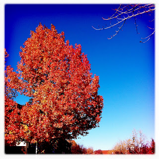

Recovered weblog entry
The remnants of color

On a brisk day in Lake Arrowhead, the wind will chill you to the bone as you make your way through the whimsical shipping area. This tree in particular caught my eye, as it seemed majestic in its desire to maintain the color of autumn better than any neighboring trees. Lens: Watts
Film: Ina's 1935